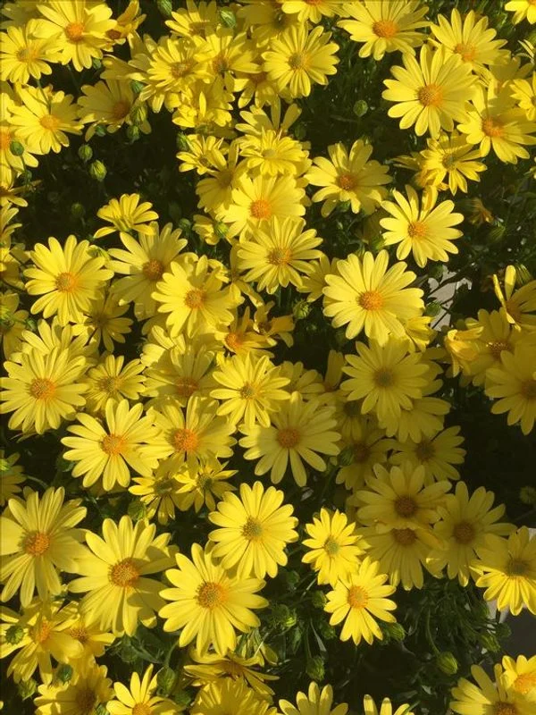
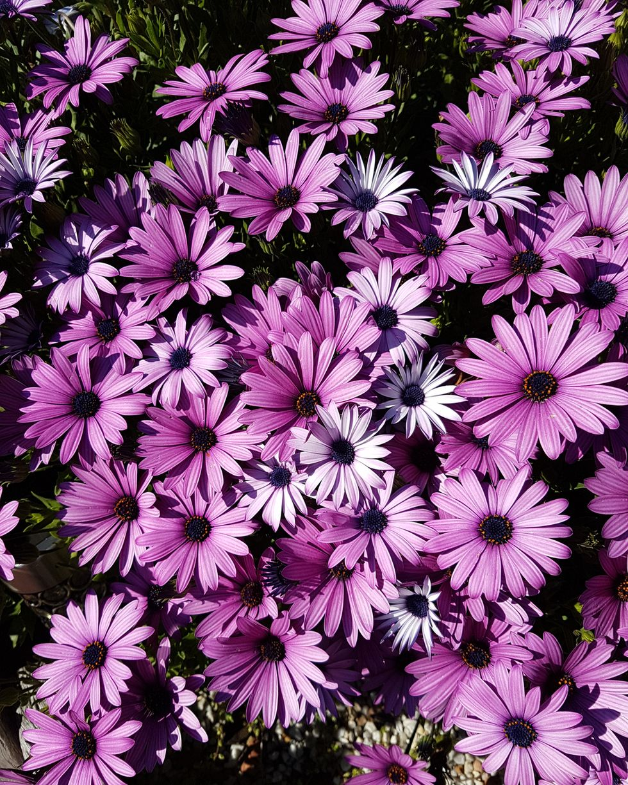
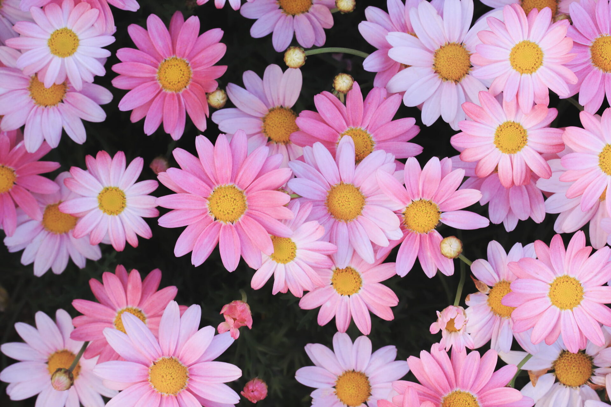
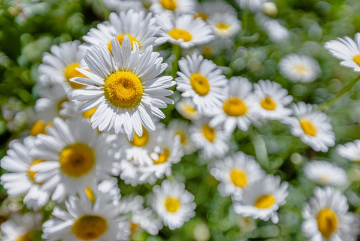

ดอกเดซี่
ชื่อเรียก "ดอกเดซี่" มาจากคำว่า "Day's eye" เนื่องจากกลีบงุ้มในเวลากลางคืน และบานสะพรั่งในยามเช้า
จึงเปรียบเสมือนเป็นดอกไม้ที่ลืมตาสดใสในเวลากลางวัน นอกจากนี้ คำว่า "Daisy" ยังเป็นสแลงในภาษาอังกฤษ ที่แปลว่า
"ยอดเยี่ยม" ได้อีกด้วย
นปัจจุบันดอกเดซี่จะพบเห็นได้ทั่วโลก เนื่องจากเติบโตง่ายและทนต่อทุกสภาพภูมิอากาศ
แต่ต้นกำเนิดของดอกเดซี่อยู่ในประเทศเม็กซิโก และบริเวณแถบรัฐเทกซัส ประเทศสหรัฐอเมริกา
คนสมัยก่อนนำดอกเดซี่มาบดกับส่วนผสมต่างๆ เพื่อใช้เป็นยารักษาโรค
ในแง่ของวัฒนธรรมตะวันตก ดอกเดซี่กลายเป็นสัญลักษณ์ของความไร้เดียงสา
และความรักที่บริสุทธิ์
ดอกเดซี่มักถูกนำมาใช้เสี่ยงทายความรัก โดยเฉพาะผู้หญิงที่ค่อยๆ เด็ดกลีบดอกเดซี่ ออกทีละกลีบ
เพื่อทำนายว่าคนที่หมายปอง "รัก" หรือ "ไม่รัก" นั่นเอง
จะเห็นได้ว่าไม่ใช่แค่ความสวยงามที่ทำให้ดอกเดซี่เป็นดอกไม้ที่ได้รับความนิยม แต่ยังมีบริบทความเชื่อด้านอื่นๆ
มาเพิ่มเรื่องราวของดอกเดซี่ให้น่าสนใจมากขึ้น
Culture
กล่าวกันว่าชาวอัสซีเรียนในยุคโบราณ นำดอกเดซี่มาบดผสมกับน้ำมัน เพื่อใช้เป็นยาย้อมผมที่หงอกขาวให้กลับเป็นสีดำ
ตำรายาโบราณบางเล่มยังเชื่อว่าดอกเดซี่มีคุณสมบัติในการรักษาโรคเกี่ยวกับตาได้ด้วย ว่ากันว่าพระเจ้าเฮนรี่ที่ 7
ของอังกฤษ ทรงเสวยดอกเดซี่เพื่อรักษาอาการปวดโรคกระเพาะ นอกจากนั้น ในวัฒนธรรมตะวันตกมักจะเห็นภาพเด็กๆ
นำดอกเดซี่มาถักเป็นมงกุฎไว้สวมใส่ อีกทั้งยังมีการนำดอกเดซี่มาใช้เป็นดอกไม้เสี่ยงทายความรัก
โดยนำมาเด็ดกลีบออกทีละกลีบ แต่ละกลีบแทนคำว่า รัก หรือ ไม่รัก สลับกันไป
และกลีบสุดท้ายที่เหลือจะกลายเป็นผลลัพธ์ของการเสี่ยงทายความรัก
ความหมายของดอกเดซี่แต่ละสี
ดอกเดซี่สีขาว
มีความหมายว่า ความไร้เดียงสา และความรักที่บริสุทธิ์ เป็นสีที่สื่อถึงความรักที่บริสุทธิ์ที่มีให้กับคนรัก
และความน่าทะนุถนอมนั่นเอง
ดอกเดซี่สีชมพู
เหมาะกับการมอบให้กับคนที่เรารัก เพราะสีชมพูยังมีความหมายว่า ความหลงใหล และความยินดี
เหมาะสำหรับมอบให้คนที่เรากำลังตกหลุมรัก และมอบเพื่อแสดงความยินดีในโอกาสพิเศษต่าง ๆ
ดอกเดซี่สีม่วง
ความห่วงใย ความเอาใจใส่ และแทนการให้กำลังใจ เหมาะสำหรับมอบให้คนรักหรือครอบครัว เพื่อแสดงว่าห่วงใยที่มีให้
และเป็นการให้กำลังใจที่ดีให้กับผู้รับ
ดอกเดซี่สีเหลือง
ทนความสดใส และความสุข เหมาะสำหรับมอบให้กับคนที่รักและเคารพเพื่ออวยพรหรือแสดงความห่วงใย
ให้คนที่รับมีแต่ความสุขและความสดใสดั่งดอกเดซี่สีเหลือง
ดอกเดซี่สีแดง
สื่อถึงความรัก ความโรแมนติก ดอกเดซี่สีแดงหมายถึง
จึงเป็นสีที่เหมาะสำหรับการมอบให้คนที่รักหรือหวานใจของเราเพื่อแสดงความรัก ความสื่อสัตย์ที่มี
 
 
Daisies and other stories
เรื่องอยากบอกของ ‘ดอกเดซี่’
เดซี่เป็นพืชที่เติบโตง่ายและแพร่พันธุ์ได้อย่างรวดเร็ว ในประเทศอเมริกา ดอกอิงลิชเดซี่ (English Daisy)
ถูกมองว่าเป็นวัชพืชที่ทำลายได้ยาก ส่วนตำนานของชาวเซลติกในประเทศอังกฤษเชื่อกันว่า
ดอกเดซี่เกิดจากการที่พระเจ้าโปรยดอกไม้ลงมายังพื้นโลก
เพื่อช่วยปลอบประโลมจิตใจบรรดาพ่อแม่ผู้สูญเสียลูกไปตั้งแต่วัยเยาว์
Meaning
Daisies spread hope like the sun
ดอกไม้แห่งความหวัง
เดซี่เป็นดอกไม้ซึ่งเหมาะจะมอบเป็นของขวัญแสดงความยินดีแก่ทารกแรกเกิดหรือคุณแม่มือใหม่
เพราะนอกจากจะหมายถึงความบริสุทธิ์แล้ว เดซี่ยังเป็นดอกไม้ที่สื่อถึงดวงอาทิตย์ การเริ่มต้นใหม่ ความอบอุ่น
และความหวัง เนื่องจากพวกมันจะแย้มบานทุกครั้งเมื่อต้องแสงแดดในยามเช้า
รวมทั้งยังเป็นตัวแทนของความแข็งแกร่งพากเพียร
เพราะเดซี่เจริญเติบโตได้ง่ายและไม่รู้จักเหน็ดเหนื่อยในเกือบทุกสภาพแวดล้อม
แม้เดซี่ซึ่งทุกคนคุ้นตาจะเป็นไม้ดอกเล็ก ๆ มีกลีบเป็นแฉกสีขาวและเกสรตรงกลางสีเหลืองสดใส แต่ความจริงแล้ว
สายพันธุ์ของเดซี่นั้นยังมีสีอื่น ๆ ให้ได้พบเห็นกันด้วย
Anecdote
ในช่วง ค.ศ.1800 ‘Daisy’ กลายมาเป็นคำแสลง ‘That’s a daisy!’ หมายถึงบางสิ่งบางอย่างซึ่งมีคุณภาพดีเยี่ยม และ
‘ups-a-daisy’ เป็นวลีที่ผู้ใหญ่มักจะใช้พูดให้เด็ก ๆ ลุกขึ้นเมื่อล้มลง แต่เมื่อเวลาผ่านมาถึงยุคปัจจุบัน จาก
‘That’s a daisy!’ ก็กลายมาเป็น ‘That’s a doozy!’ และ ‘ups-a-daisy’ ก็กลายเป็น ‘whoops-a-daisy’ หรือ ‘oopsy
daisy’ ซึ่งเป็นคำที่จะใช้เมื่อเกิดความผิดพลาดบางอย่างขึ้น
ที่มาเนื้อหา
แหล่งที่มาของข้อมูล